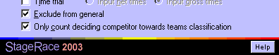

StageRace facilitates in the special demands that exist for team time trials (2.5).
Often, team time trials only count towards the teams classification and not to the general individual classification. Therefore you can choose a half stage not to count towards the general classification, through the Half stage settings dialog. This possibility contradicts with rule 2.6.024.

Exclude from general and Only count... in the half stage settings dialog
The first so many competitors that arrive from a team, are normally given the same time in a team time trial. This would result in the exact same time being added repeatedly to the team's total race time in the teams classification, which is often undesired. Therefore you can choose for each team only the time of one of its competitors to count towards the teams classification, through the Half stage settings dialog. Note that the deciding competitor will be the competitor whose time is used. This competitor can be chosen from the ranking settings for teams classifications.
The Time trial starting order dialog allows to automatically generate a team time trial starting order (2.6.023), based on the latest general teams classification.
Some races, while not counting a team time trial towards the general individual classification (see above), award bonus seconds to individual competitors based on their team's results. This can be facilitated using time corrections (bonuses). This possibility contradicts with rule 2.6.020.